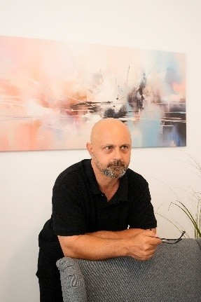

Imagine articol
În pregătire
Articol în pregătire
Aici vor apărea articole despre psihoterapie și viața interioară.
În curândPsihoterapie psihanalitică pentru adulți — în cabinet, în București, și online.
Un spațiu sigur în care „personajul” descoperă cine este și devine autorul propriei povești de viață.

„Cine este cineva?” Ne naștem, ne formăm și trăim normativ într-o lume care își lasă profund amprenta asupra vieților noastre — prin obișnuințe, standarde, cerințe, generalizări, judecăți de valoare, prejudecăți profane și derive comportamentale. Astfel, dificultățile subiective psiho-emoționale, comportamentale și relaționale sunt întotdeauna forme de exprimare a unei anumite configurații personale: „cine este cineva” spre deosebire de „ce are cineva”.
„Personaj” versus „Autor” — deosebirea dintre cei care se lasă trăiți de dificultățile vieții cotidiene și cei care aleg travaliul provocator al psihoterapiei este diferența dintre a fi un personaj într-o piesă scrisă de altcineva și a fi autorul care își scrie propria poveste de viață.
Scopul procesului terapeutic este dobândirea unei flexibilități dinamice, prin care „personajul” descoperă „cine este” și devine „autorul” creativ — care renunță să mai trăiască trecutul în prezent pentru a alege să trăiască prezentul în prezent, în acord cu principiul realității, prin armonie și echilibru între diferențe.
…al cărei final se conturează abia pe parcurs, susținută de motivația pentru o stare de mai bine — în relația cu sine și în relațiile cu ceilalți.
Psihoterapia psihanalitică propune o reconfigurare realistă a tiparelor de trăire și de relaționare cu sine și cu ceilalți, prin explorarea distorsiunilor inconștiente inerente circumstanțelor de viață. Relația terapeutică devine partenerul de călătorie care menține echilibrul ambarcațiunii pe care tu, navigatorul, o conduci.
Ca orice aventură transformatoare, experiența psihoterapiei presupune un erou și o înșiruire de provocări ce vor deveni repere ale istoriei de viață.
O formă de psihoterapie psihodinamică ce explorează procesele inconștiente — partea internă care, în moduri imperceptibile, modelează percepția trecutului și trăirea prezentului.
Terapeutul îți pune la dispoziție busola și ancora pentru ca tu, navigatorul, să-ți revizitezi trecutul, să-ți trăiești prezentul și să-ți colorezi viitorul cu nuanțele pe care numai tu le ai.
Psihoterapie individuală cu adulți, cu prezență fizică în cabinet sau online.
Ședințe personalizate, centrate pe nevoile tale.
Prezență fizică în cabinet sau prin videoconferință.
45 min
200 lei
Următoarele — tarif stabilit de comun acord.
O enumerare orientativă a temelor cu care poți veni în cabinet. Lista nu este exhaustivă — fiecare poveste își are propriul context.
Renunță să fii personajul din povestea altcuiva și devino autorul propriei vieți.
— principiul care ghidează fiecare ședință
De la primul contact până la ritmul ședințelor — la ce să te aștepți.
Mă suni sau îmi scrii. Stabilim împreună un prim moment în care să ne vedem, în cabinet sau online.
O întâlnire de 45 de minute (200 lei) în care ne cunoaștem și conturăm ce te aduce în terapie.
Stabilim de comun acord ritmul ședințelor și tariful pentru întâlnirile următoare.
Începe aventura: explorăm, înțelegem și reconfigurăm, în propriul tău ritm. [detalii de confirmat]
Programează o ședință sau scrie-mi pentru orice întrebare. Îți răspund în cel mai scurt timp.
Reflecții despre psihoterapie, relații și viața interioară — primele articole sunt în pregătire.
Aici vor apărea articole despre psihoterapie și viața interioară.
În curândAici vor apărea articole despre relații și procesul terapeutic.
În curândAici vor apărea articole pe măsură ce sunt publicate.
În curând